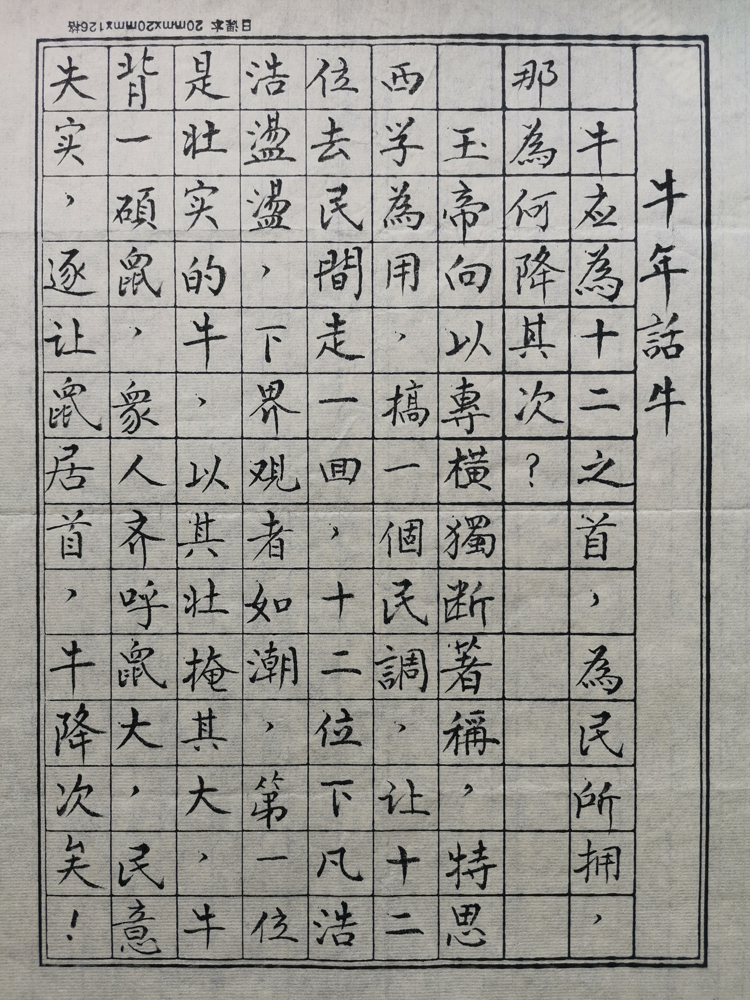
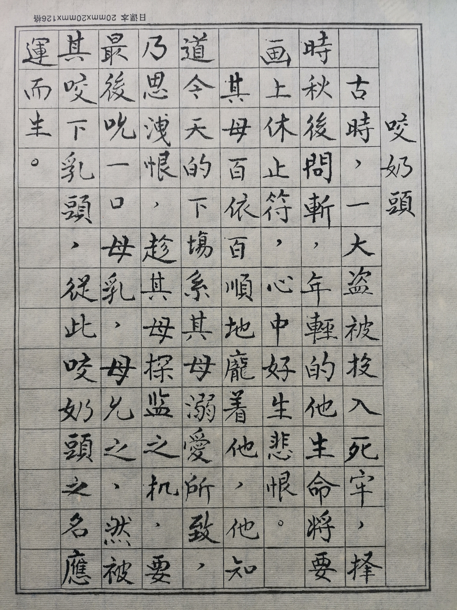
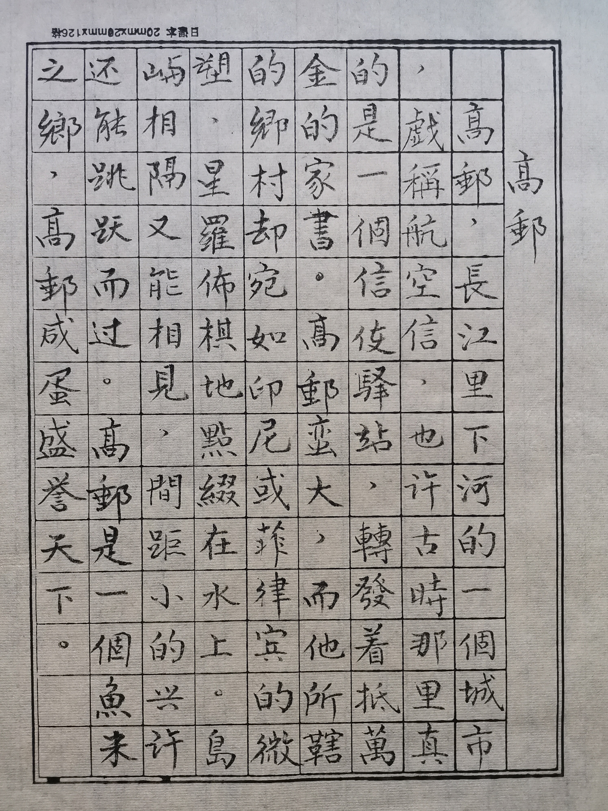
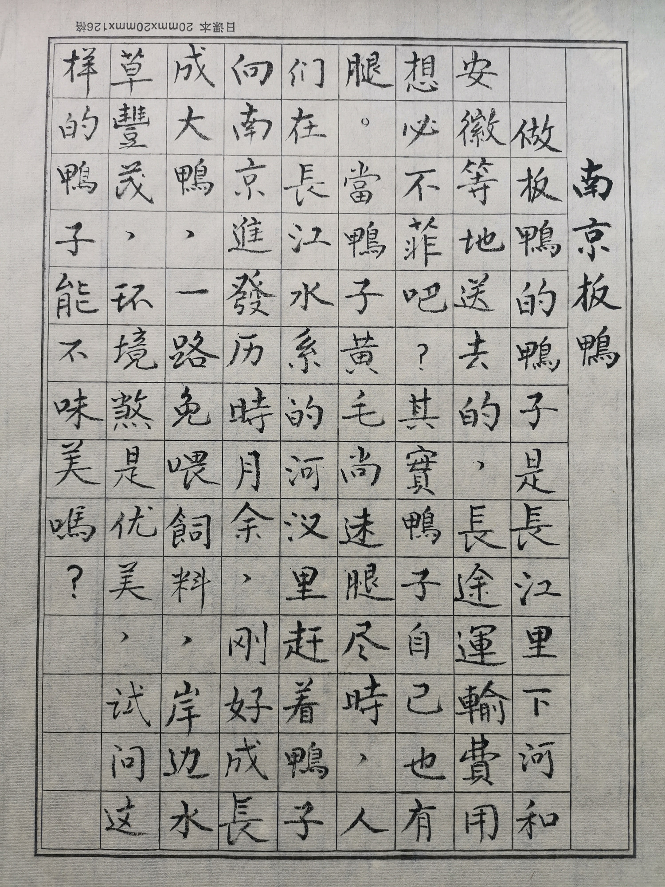
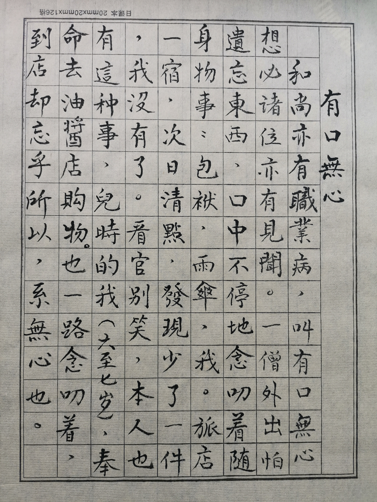
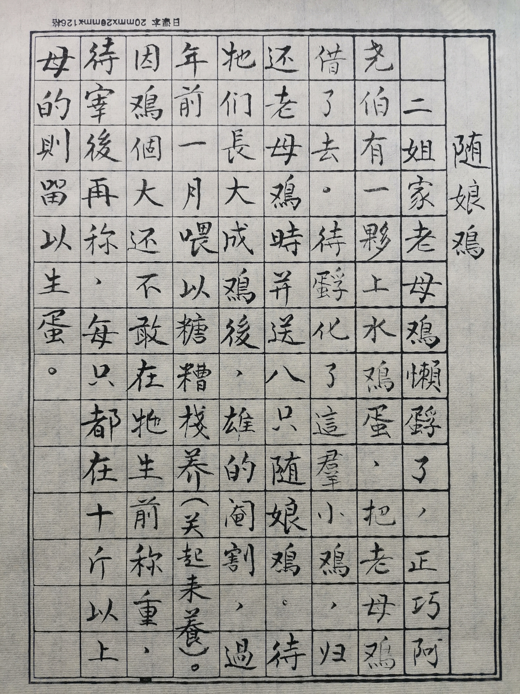
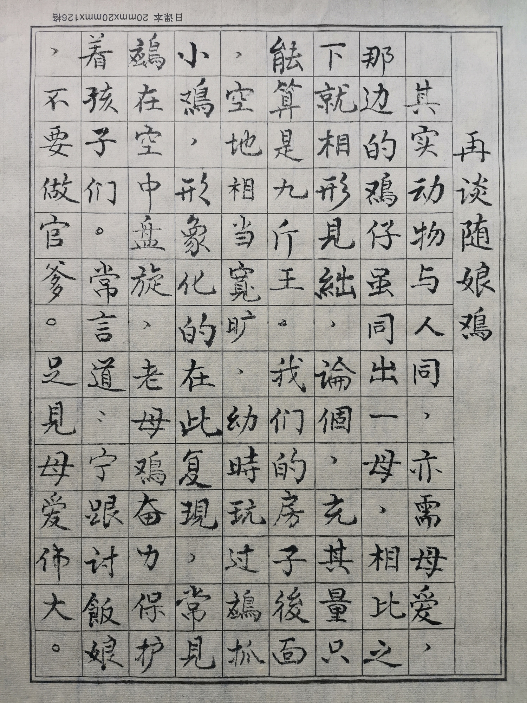
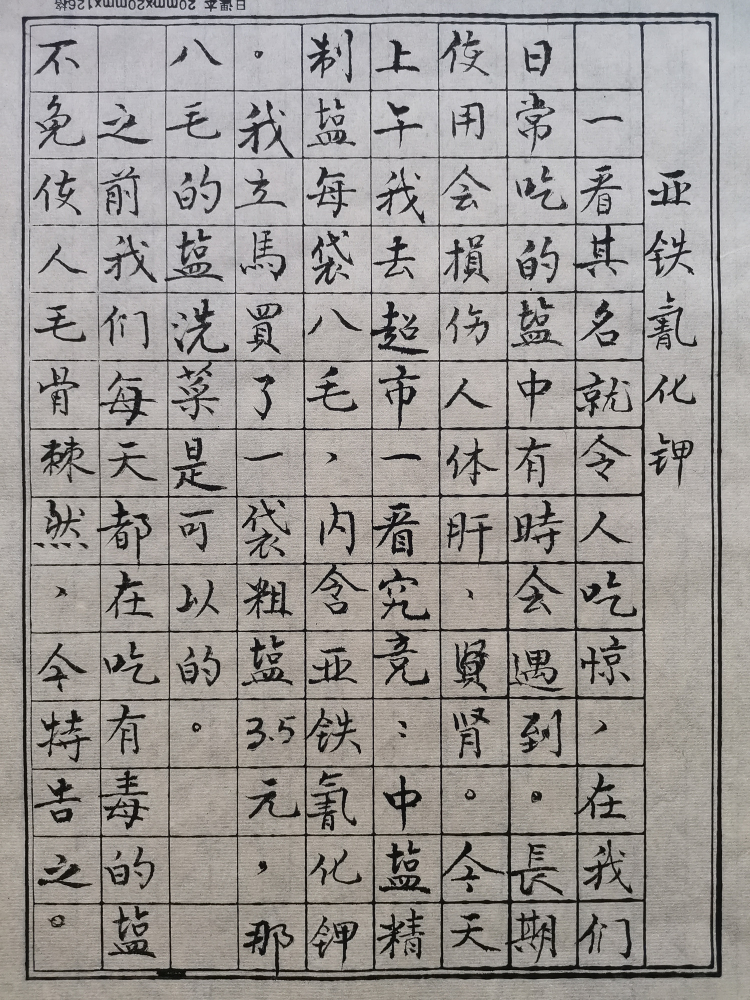

摄影 周意荣
摄影 周意荣
短文
①牛年话牛
牛应为十二之首，为民所拥，那为何降其次？玉帝向以专横独断著称，特思西学为用，搞一个民调，让十二位去民间走一回，十二位下凡浩浩荡荡，下界观者如潮，第一位是壮实的牛，以其壮掩其大，牛背一硕鼠，众人齐呼鼠大，民意失实，遂让鼠居首，牛降次矣！
②咬奶头
古时，一大盗被投入死牢，择时秋后问斩。年轻的他生命将要画上休止符，心中好生悲恨。其母百依百顺地宠着他，他知道今天的下场系其母溺爱所致，乃思泄恨，趁其母探监之机，要最后吮一口母乳，母允之，然被其咬下乳头，从此咬奶头之名应运而生。
③高邮
高邮，长江里下河的一个城市，戏称航空信，也许古时那里真的是一个信使驿站，转发着抵万金的家书，高邮蛮大，而它所辖的乡村却宛如印尼或菲律宾的微塑，星罗棋布地点缀在水上。岛屿相隔又能相见，间距小的兴许还能跳跃而过。高邮是一个鱼米之乡，高邮咸蛋盛誉天下。
④南京板鸭
做板鸭的鸭子是长江里下河和安徽等地送去的，长途运输费用想必不菲吧？其实鸭子自己也有腿，当鸭子黄毛尚未褪尽时，人们在长江水系的河汊里赶着鸭子向南京进发，历时月余，刚好成长成大鸭，一路免喂饲料，岸边水草丰茂，环境煞是优美，试问这样的鸭子能不美味吗？
⑤板鸭与咸蛋
大凡做学问的人，思维和行为都会有别于常人，比如爱迪生，年幼时曾有过替代老母鸡孵小鸡的想法。这里介绍一位秀才，早先尝过高邮咸蛋，无法理解完整的蛋壳里怎会是咸的？后来他吃了南京板鸭才恍然大悟，哦！原来这高邮咸蛋系南京板鸭所生，咸鸭生咸蛋顺理成章也！
⑥有口无心
和尚亦有职业病，叫有口无心，想必诸位亦有见闻。一僧外出怕遗忘东西，口中不停地念叨着随声事物：包袱，雨伞，我。旅店一宿，次日清点，发现少了一件，"我"没有了。看官别笑，本人也有这种事，儿时的我(大致七岁)，奉命去油酱店购物，也一路念叨着，到店却忘乎所以，系无心也。
⑦牛肉汤
暮年，没尝过关帝庙前牛肉汤而感到遗憾。从我记事起，见到关圣殿前那用柏树柴爿烧的牛肉汤，二者混合之味，久久不能忘怀。哪来的柏树竟然烧了几十年，直至上个世纪末，此物才淡出江湖，幼时温饱是最大满足，不会去思念，后来多次相见亦无热忱，现在永无此物甚感遗憾。
⑧随娘鸡
二姐家老母鸡懒孵了，正巧阿尧伯有一窝上水鸡蛋，把老母鸡借了去。待孵化了这群小鸡，归还老母鸡时并送了八只随娘鸡。待它们长大成鸡后，雄的阉割，过年前一月喂以糖糟栈养(关起来养)，因鸡个大还不敢在它生前称重，待宰后再称，每只都在十斤以上，母的则留以生蛋。
⑨再谈随娘鸡
其实动物与人同，亦需母爱，那边的鸡仔虽同出一母，相比之下就相形见绌，论个，充其量只能算是九斤王，我们的房子后面，空地相当宽旷，幼时玩过鹰抓小鸡，形象化地在此复现，常见鹰在空中盘旋，老母鸡奋力保护着孩子们。常言道：宁跟讨饭娘，不要做官爹。足见母爱伟大。
⑩亚铁氰化钾
一看其名就令人吃惊，在我们日常吃的盐中有时会遇到。长期使用会损伤人体肝，肾。今天上午我去超市一看究竟：中盐精制盐每袋八毛，内含亚铁氰化钾。我立马买了一袋粗盐3.5元，那八毛的盐洗菜是可以的。之前我们每天都是吃有毒的盐，不免使人毛骨悚然，今特告知。
